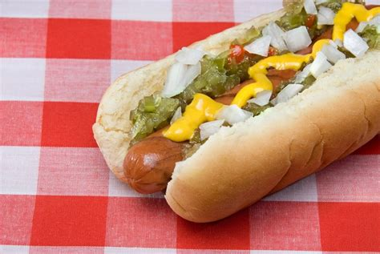

Hot-dog

Description
Variation on a hot dog. Kid approved.
Experiment and use whatever combo of ingredients you wish.
Ingredients
- 8 hot dogs, chopped
- ⅔ cup shredded Cheddar cheese
- 3 tablespoons pickle relish
- 3 tablespoons ketchup
- 2 teaspoons prepared mustard
- 3 tablespoons chopped onion
- 8 hot dog buns
Steps
- Brown ground beef and 1/3 cup onion in a large skillet over medium heat,
until the meat is no longer pink, 5 to 7 minutes. Drain, and return the skillet to the stove.
- Stir tomato sauce and ketchup into the ground beef mixture.
Add chili powder, vinegar, garlic powder, hot sauce, salt, and pepper;
stir until well combined. Reduce heat to low and simmer uncovered until sauce has thickened,
8 to 10 minutes. If sauce gets too thick, add water to thin it out.
- Meanwhile steam or simmer hot dogs in hot water until hot.
- Assemble hot dogs: Place a hot dog in a bun and spoon 2 to 3 tablespoons sauce on top.
Sprinkle with remaining onions and drizzle with yellow mustard.